Visualization of spatial data
Martijn Tennekes
Summer 2021
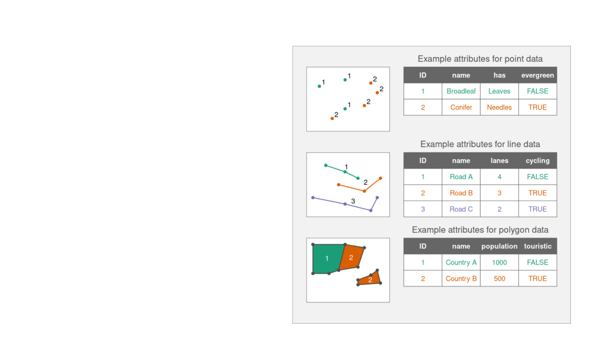
Spatial vector data
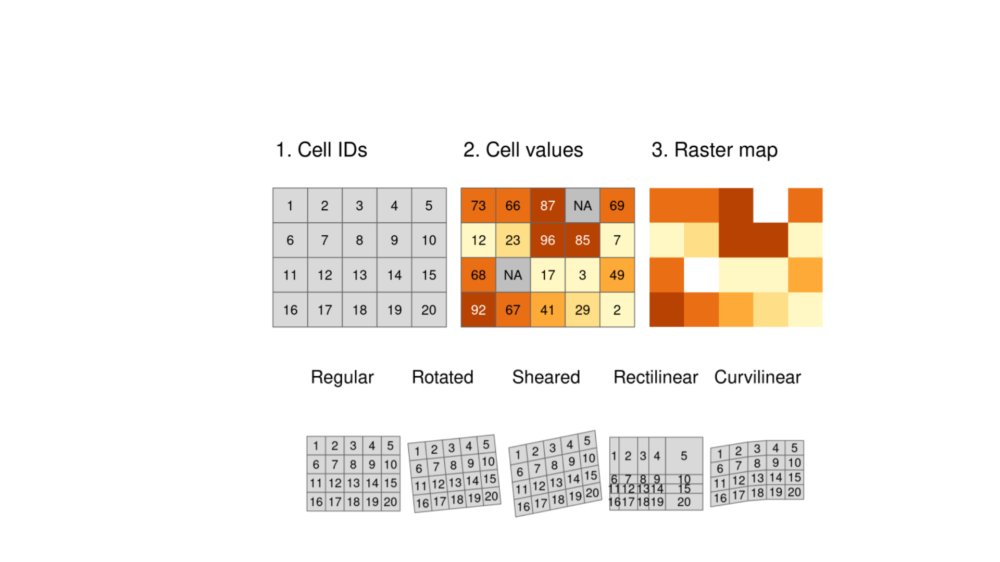
Spatial raster data
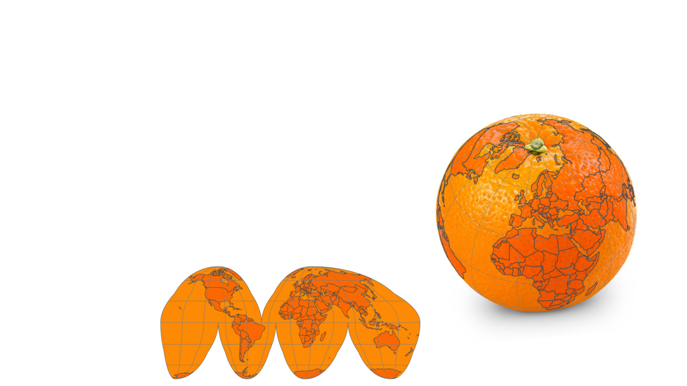
Coordinate Reference System (CRS)
• How to visualize spatial data on a 2D device?
• Lat/lon coordinates can be projected to a Cartesian x-y coordinate
system, called a (projected) Coordinate Reference System (CRS)
• A projected CRS is useful for visualization, simply because then you
know where to draw what.
• Caution! The world is still round, so a projected CRS is a compromise.
Therefore, be careful when choosing a different CRS.
How to peal an orange?
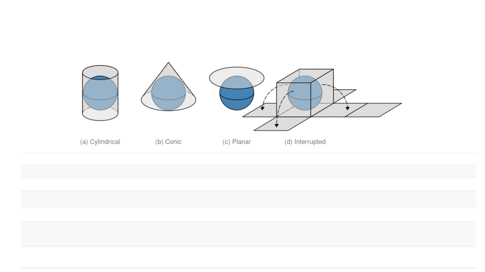
CRS families and properties
Property Conformal Equal area Equidistant Azimuthal
Preserves Local angle (shape) Area Distance Direction
Applications Navigation, climate Statistics Geology Geology
Examples (cyclindrical) Mercator Gall-Peters, Eckert IV Equirectangular none
Examples (conic) Lambert conformal conic Albers conic Equidistant conic none
Examples (planar) Stereographic Lambert azimuthal equal-
area
Azimuthal equidistant Stereographic, Lambert
azimuthal equal-area
Examples (interrupted) Myriahedral Goode homolosine,
Myriahedral
none none
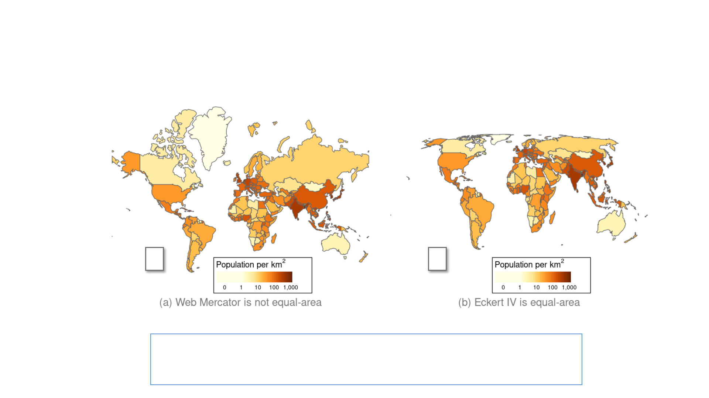
CRS: does it matter?
Yes:
x
v
Web Mercator is good for navigation (local shapes are preserved),
but not so well for thematic maps (areas close to the poles are too large)
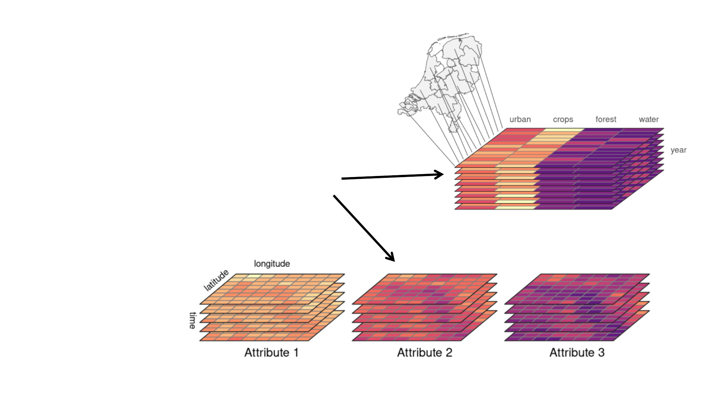
Spatial data in R
Core packages for spatial classes:
• sf vector data
• stars raster data and data cubes
• terra raster and vector data
• sfnetworks spatial networks
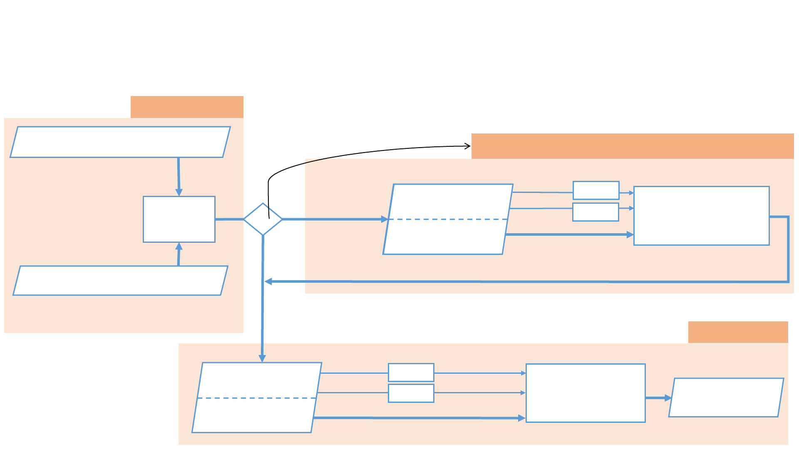
Preprocessing
Visualization
(Optional) data-driven Spatial Transformation
Visualization workflow
What do we want to visualize?
e.g. employment, air quality, …
Where are those phenomena?
e.g. country polygons, 100 x 100 m raster cells, …
(non-spatial) Content data
Spatial data
Preprocess
and Join
Content data
Spatial data
Content data
Spatial data
Visualization
Scaling
Data-driven
Spatial transformation
Scaling
Data variable(s)
of interest
Content data
Spatial data
Draw
Scaling
Scaling
Data variable(s)
of interest
Visual variables
yes
no
Do ?
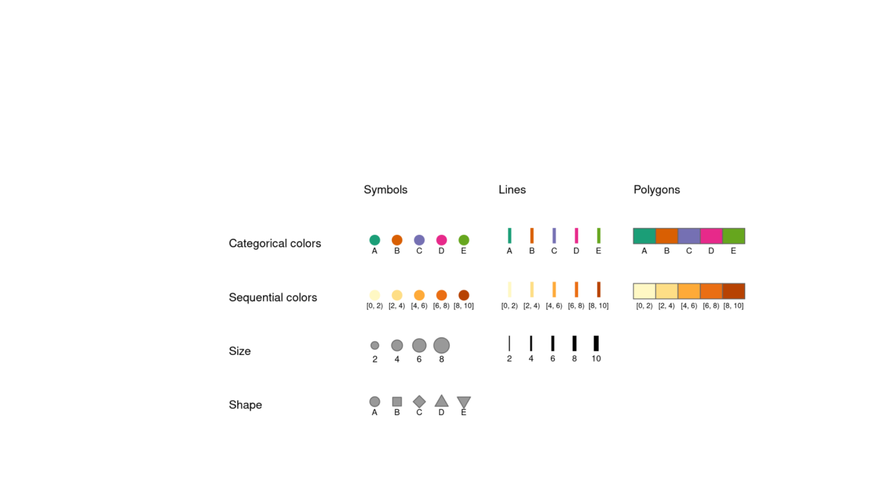
Visual variables
Visual variables
Spatial objects
Alpha transparency, line type, fill pattern, etc. (less common)
(and rasters)
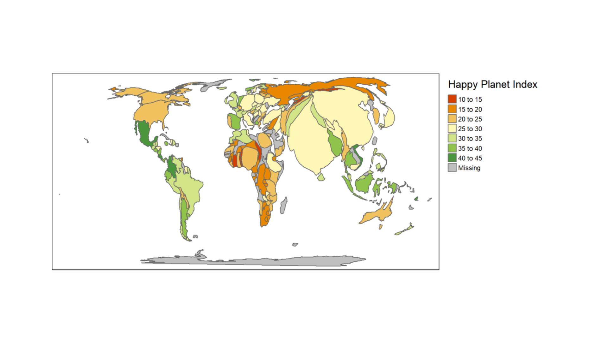
Example: cartogram
Data variable Scale Stage Visual variable Visual values
Population Continuous Spatial Transformation Polygon size Weights
HPI Indicator Intervals Visual mapping Polygon fill color Diverging palette (“RdYlGn”)
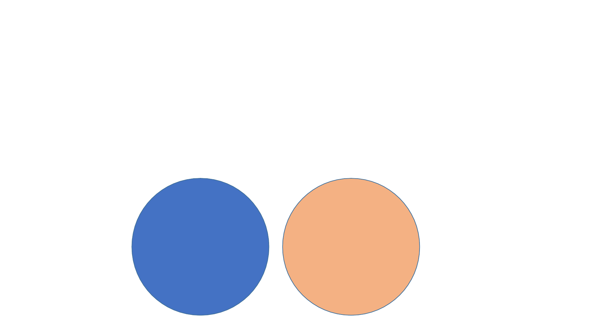
Losing information
• Spatial data are often very detailed
• For many user tasks, this high level of detail is not needed
• Therefore, information loss is a key concept in good visual design.
Visual Design
is to find the
best way to
depict some
information
Visual Design
is to find the
best way to
lose some
information
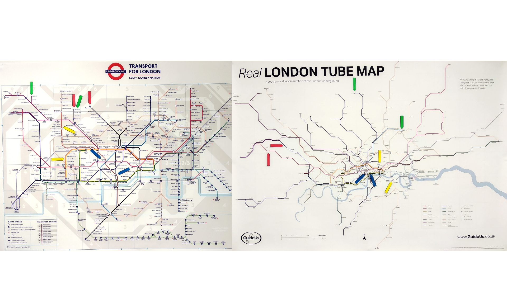
Is realistic always better?
London Underground Map
Realistic locations
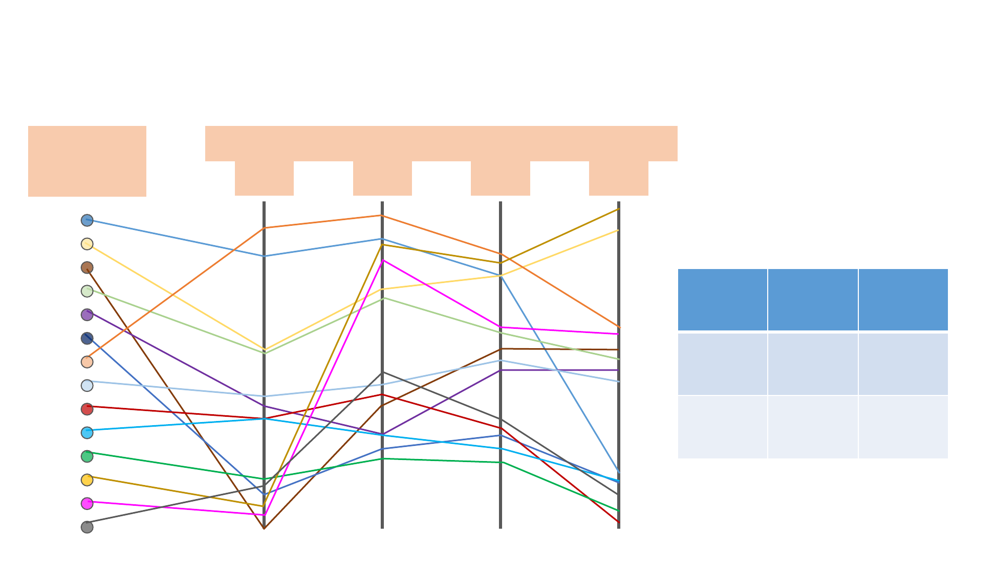
Origin-destination data visualization
1
3
visual
designs
methods for losing information
D
1
D
2
D
3
D
4
Nodes Edges
Data
structure
D1 D2
Visual
variables
D3 D4
Tennekes, M. Chen, M. (2021) Design Space of Origin-Destination Data Visualization. Computer Graphics Forum 40(3), 323-334.
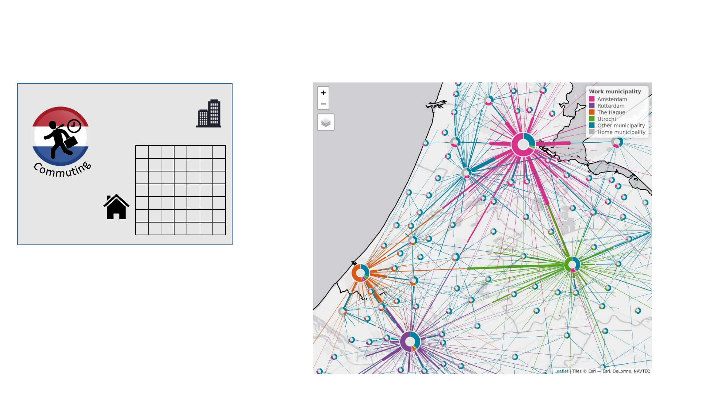
New design: doughnut map
Example data
Home municipality (355)
Work municipality (355)
• Doughnuts summarize where
residents work
• Half-lines depict the commuting
flows (drawn from midway to work)
Tennekes, M. Chen, M. (2021) Design Space of Origin-Destination Data Visualization. Computer Graphics Forum 40(3), 323-334.

Visualization of spatial data in R
• Generic plot function: fast and straight forward
• ggplot2 : general data visualization with many extensions (e.g. ggspatial)
• tmap: similar approach as ggplot2, but tailored to maps (also interactive)
• mapview: interactive exploration
• leaflet: interactive maps (both mapview and tmap use it under the hood)
• mapsf: great looking thematic maps
tmap
Software
• The current CRAN version tmap v3 is stable and mature
• A new major update tmap v4 is in development; see
https://mtennekes.github.io/tmap4/ for what to expect
Book
• We plan to publish a book on tmap.
• A draft is available online: https://r-tmap.github.io/
• This book is written for tmap v3, but will be updated to tmap v4